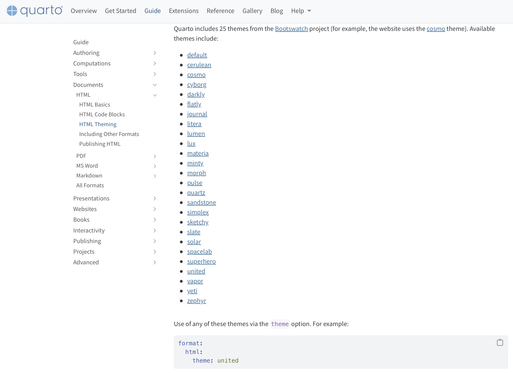
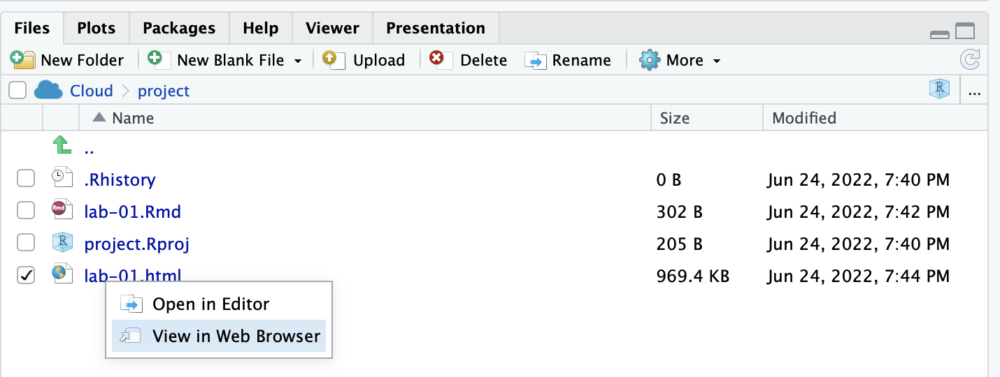

library(tidyverse)
library(datasauRus)Lab 01 - Hello R!
RStudio intro
Quarto intro
Scatterplots
Correlation
Goals
The main goal of this lab is to introduce you to R and RStudio, which we will be using throughout the course both to learn the statistical concepts discussed in the course and to analyze real data and come to informed conclusions.
R is the name of the programming language itself and RStudio is a convenient interface.
You will…
- Access help documentation with
? - Create scatterplots
- Calculate correlation coefficients
- Tweak the YAML
As the labs progress, you are encouraged to explore beyond what the labs dictate; a willingness to experiment will make you a much better data scientist. Before we get to that stage, however, you need to build some basic fluency in R. Today we begin with the fundamental building blocks of R and RStudio: the interface, reading in data, and basic commands.
For this lab, you will collaborate in your (randomly assigned) groups (see Blackboard), but you will each submit your own lab.
Getting Started - RStudio
You should have already downloaded R & RStudio and created an R Project called “STAT_4380”. If you haven’t, touch base with the professor to get set up. To get started on this lab, do the following:
- Open our class GitHub repo
- Navigate to LABS > lab-01.qmd
- Click to “Download raw file”
- Place the downloaded .qmd document in your STAT_4380 folder on your computer
- From inside your STAT_4380 RStudio Project, open and render the Quarto document
The document you are currently reading has all the instructions for Lab 01, but you will complete the lab by adding code and text responses to the lab-01.qmd document in RStudio.
Warm up
Before we introduce the data, let’s warm up with some simple tasks.
YAML
The top portion of your Quarto file (between the three dashed lines) is called YAML. It stands for “YAML Ain’t Markup Language”. It is a human friendly data serialization standard for all programming languages. All you need to know is that this area is called the YAML (we will refer to it as such) and that it contains meta information about your document.
Packages
In this lab we will work with two packages: datasauRus which contains the dataset we’ll be using and tidyverse which is a collection of packages for doing data analysis in a “tidy” way. These packages should already be installed if you ran the code in the install_packages.R file previously. You can load the packages by running the following in the Console.
Note that the packages are also loaded with the same commands in your Quarto document.
Data
The data frame we will be working with today is called datasaurus_dozen and it’s in the datasauRus package. Actually, this single data frame contains 13 datasets, designed to show us why data visualisation is important and how summary statistics alone can be misleading. The different datasets are marked by the dataset variable.
If it’s confusing that the data frame is called datasaurus_dozen when it contains 13 datasets, you’re not alone! Have you heard of a baker’s dozen?
Exercises
A question mark before the name of an object will always bring up its help file. This command must be run in the Console.
Let’s take a look at what these datasets are. To do so we can make a frequency table of the dataset variable:
datasaurus_dozen |>
count(dataset)# A tibble: 13 × 2
dataset n
<chr> <int>
1 away 142
2 bullseye 142
3 circle 142
4 dino 142
5 dots 142
6 h_lines 142
7 high_lines 142
8 slant_down 142
9 slant_up 142
10 star 142
11 v_lines 142
12 wide_lines 142
13 x_shape 142The original Datasaurus (dino) was created by Alberto Cairo in this great blog post. The other Dozen were generated using simulated annealing and the process is described in the paper Same Stats, Different Graphs: Generating Datasets with Varied Appearance and Identical Statistics through Simulated Annealing by Justin Matejka and George Fitzmaurice. In the paper, the authors simulate a variety of datasets that have the same summary statistics as the Datasaurus but have very different distributions.
Matejka, Justin, and George Fitzmaurice. “Same stats, different graphs: Generating datasets with varied appearance and identical statistics through simulated annealing.” Proceedings of the 2017 CHI Conference on Human Factors in Computing Systems. ACM, 2017.
Start with the datasaurus_dozen and pipe it into the filter function to filter for observations where dataset == "dino". Store the resulting filtered data frame as a new data frame called dino_data.
dino_data <- datasaurus_dozen |>
filter(dataset == "dino")There is a lot going on here, so let’s slow down and unpack it a bit.
First, the pipe operator: |>, takes what comes before it and sends it as the first argument to what comes after it. So here, we’re saying filter the datasaurus_dozen data frame for observations where dataset == "dino".
Second, the assignment operator: <-, assigns the name dino_data to the filtered data frame.
Next, we need to visualize these data. We will use the ggplot function for this. Its first argument is the data you’re visualizing. Next we define the aesthetic mappings. In other words, the columns of the data that get mapped to certain aesthetic features of the plot, e.g. the x axis will represent the variable called x and the y axis will represent the variable called y. Then, we add another layer to this plot where we define which geometric shapes we want to use to represent each observation in the data. In this case we want these to be points, hence geom_point.
ggplot(data = dino_data, mapping = aes(x = x, y = y)) +
geom_point()
If this seems like a lot, it is. And you will learn about the philosophy of building data visualizations in layers in detail next week. For now, follow along with the code that is provided.
For the second part of these exercises, we need to calculate a summary statistic: the correlation coefficient. Correlation coefficient, often referred to as \(r\) in statistics, measures the linear association between two variables. You will see that some of the pairs of variables we plot do not have a linear relationship between them. This is exactly why we want to visualize first: visualize to assess the form of the relationship, and calculate \(r\) only if relevant. In this case, calculating a correlation coefficient really doesn’t make sense since the relationship between x and y is definitely not linear – it’s dinosaurial!
But, for illustrative purposes, let’s calculate the correlation coefficient between x and y.
dino_data |>
summarize(r = cor(x, y))# A tibble: 1 × 1
r
<dbl>
1 -0.0645Start with dino_data and calculate a summary statistic that we will call r as the correlation between x and y.
⏸ ➡️ ✅ This is a good place to pause and Render to make sure there are no errors in your .qmd
⏸ ➡️ ✅ This is a good place to pause and Render to make sure there are no errors in your .qmd
⏸ ➡️ ✅ This is a good place to pause and Render to make sure there are no errors in your .qmd
In order to plot all 12 datasets we will make use of faceting.
ggplot(datasaurus_dozen, aes(x = x, y = y, color = dataset))+
geom_point()+
facet_wrap(~ dataset, ncol = 3) +
theme(legend.position = "none")facet_wrap line facets by the dataset variable, placing the plots in a 3 column grid. theme line removes the legend.
And we can use the group_by function to generate all the summary correlation coefficients.
datasaurus_dozen |>
group_by(dataset) |>
summarize(r = cor(x, y))You’re done with the data analysis exercises, but I’d like you to do two more things:


➡️ ✅ ⬆️ Yay, you’re done! Render one last time, and verify that everything is displayed correctly in your lab-01.html file. To view the .html, click on the file name in the Files quadrant, and select “View in Web Browser”. If everything looks good, you’re ready to submit!
Submit
Grading (50 pts)
| Component | Points |
|---|---|
| Ex 1 | 6 |
| Ex 2 | 6 |
| Ex 3 | 6 |
| Ex 4 | 6 |
| Ex 5 | 6 |
| Ex 6 | 6 |
| Ex 7 | 6 |
| Reflection prompts | 4 |
| Workflow & formatting | 4 |
Grading notes:
- The “Workflow & formatting” grade is to assess the reproducible workflow. This includes having readable code (e.g. adequate use of spacing and line breaks), labeled code chunks, informative headers and sub-headers, and an overall organized and uncluttered report (e.g. suppress messages & warnings, no extraneous output).